Форматирование ячеек и таблиц в Excel
Форматирование ячеек – это одно из основных отличий Excel от калькулятора. Умелое форматирование позволяет разношерстный набор данных привести к удобному для осмысления виду: выделить итоговую строку, шапку, убрать «лишние» знаки после запятой, добавить границы и т.д. В общем, форматирование позволяет набор «серой массы данных» превратить в структурированную и читабельную информацию.
Благодаря форматированию вы можете: изменить шрифт и его размер; сделать текст в ячейках полужирным, подчеркнутым, написанным курсивом; изменить цвет текста; изменить цвет заливки ячейки; изменить расположение текста в ячейке как по горизонтали, так и по вертикали; повернуть текст в ячейке.
Формат ячеек
Наиболее часто используемые команды форматирования находятся на ленте:
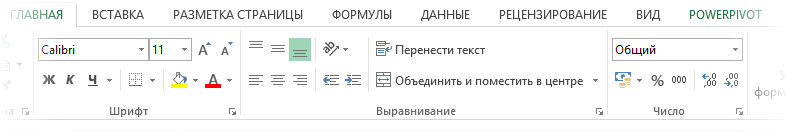Если этих кнопок не достаточно, то можно обратиться к Формату ячеек в контекстном меню (через правую кнопку мыши), либо с помощью сочетания горячих клавиш Ctrl+1 , что существенно быстрее. Откроется известное многим окошко:
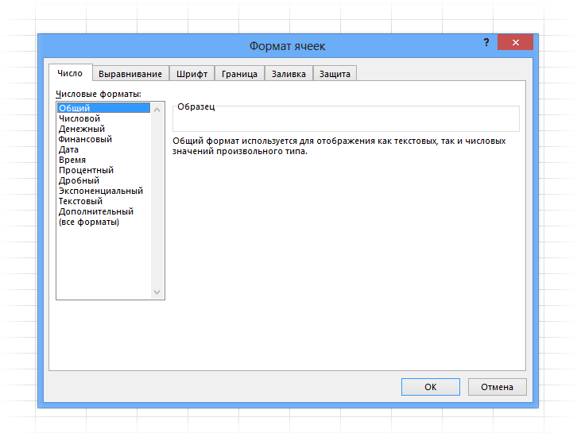В диалоговом окне есть несколько вкладок. Пробежимся по их назначению, останавливаясь на интересных моментах.
Вкладка Число
Первая вкладка Число (открыта на картинке выше) задает числовой формат. Значение в ячейке можно представить как обычное число, проценты, дату и т.д. По умолчанию всем ячейкам придается Общий формат, то есть ячейка никак не отформатирована. Поэтому, как правило, требуется перейти к другому формату.
Следующий пункт Числовой . Здесь задается количество видимых знаков после запятой (по умолчанию их два), а также можно отделить группы разрядов (тысячи, миллионы и т.д.) друг от друга.
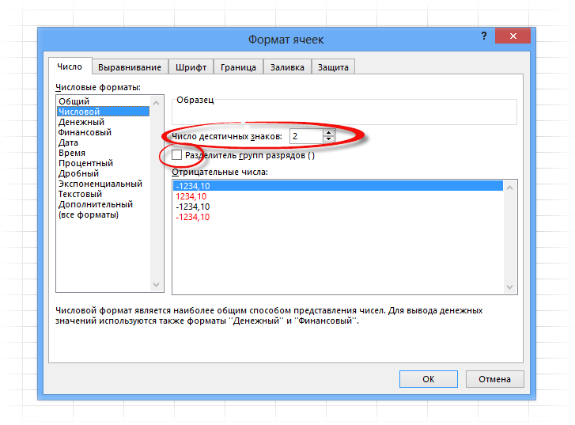Довольно часто пользуются пунктами Дата (выбор формата отображения даты), Процентный (отображение процентного формата) и Текстовый (данные сохраняются, как текст). Текстовый формат довольно интересен, т.к. позволяет отображать информацию в том виде, в каком она вносится в ячейку, без каких-либо автоматических преобразований в дату, формулу, обрезание первый нулей и т.д. Что внесли, то видим в ячейке. Команды выбора числового формата продублированы на ленте.
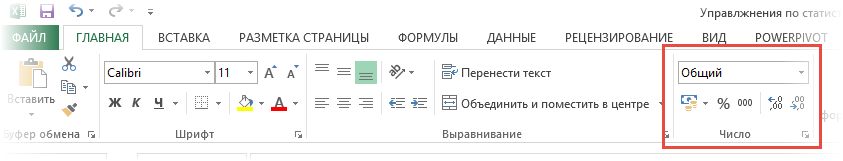Вкладка Выравнивание
Переходим на вкладку Выравнивание . Здесь задается расположение числа или текста внутри ячейки: по вертикали, горизонтали, относительно центра, по направлению и т.д.
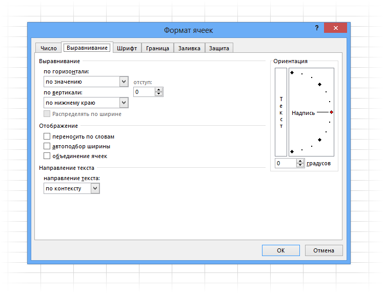Расположение и назначение команд, как и в других окнах Excel, интуитивно понятно. Достаточно прочитать названия. Тут выравнивание по вертикали, тут – горизонтали. Можно объединить несколько ячеек в одну или длинное название переносить по словам. Обращу лишь внимание на пару интересных моментов.
Когда в ячейку вносится число, оно автоматически «прилипает» к правому краю, а текст – к левому краю. Если число будет в левом столбце, а текст в следующем справа, то содержимое обоих столбцов будет выглядеть примерно так.
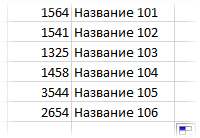Читать такое не удобно (все сливается и нужно присматриваться). Поэтому правильно сделать отступ текста от левого края. Для этого достаточно выбрать в списке по горизонтали пункт по левому краю (отступ) и установить рядом в окошке значение отступа. См. рисунок ниже.
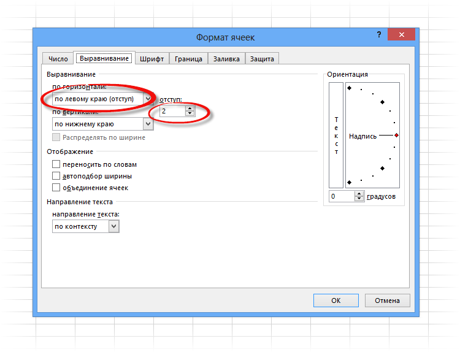Теперь глазу намного приятнее.
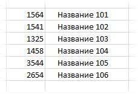Аналогичным образом можно отлепить число от правого края.
И еще один полезный совет. При создании таблицы в шапке часто объединяют ячейки, чтобы общее название «накрывало» сразу несколько столбцов. К примеру, как на картинке ниже.
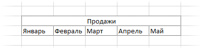«Продажи» захватывают все столбцы. Выглядит красиво, но не практично. К примеру, при выделении одного столбца диапазон автоматически расширится на все столбцы, находящиеся под объединенной ячейкой. Если попытаться скопировать этот диапазон, то может выскочить ошибка с сообщением о несовпадении ячеек. В общем, не очень практично. В то же время нужно сохранить внешний вид, как на картинке выше. Есть простой прием. Достаточно внести «Продажи» в крайнюю левую ячейку диапазона, посередине которого оно должно оказаться. Затем, начиная с этого слова, выделить вправо остальные ячейки диапазона, и выбрать пункт по центру выделения на вкладке Выравнивание .
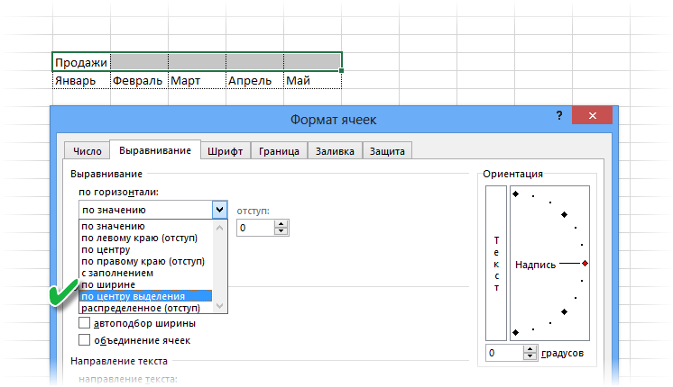Получится тот же эффект, только ячейки не будут объединены.
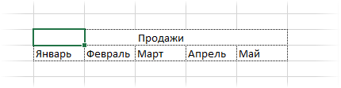Рекомендую взять на вооружение этот способ форматирования. В конце статьи находится видео о том, как расположить надпись в середине диапазона, не используя объединение ячеек.
Значительная часть команд из вкладки Выравнивание также вынесена на ленту.
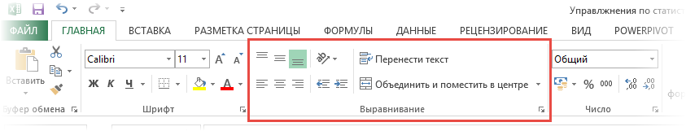Следующие вкладки Шрифт , Граница , Заливка имеют понятное назначение и вид. С их помощью выбирается шрифт, цвет, размер и т.д.
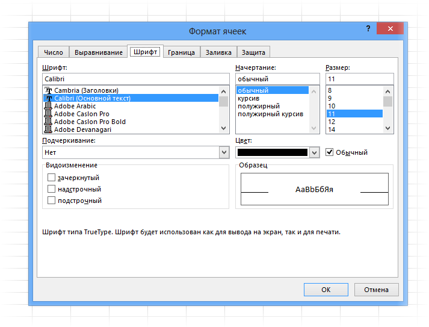Таблица без границ выглядит незавершенной. Поэтому ячейкам и таблице в целом нужно придать красивую, но не отвлекающую внимание, обводку. Выбираем во вкладке Граница тип границы, цвет, если нужно, и место проведения. Предварительный макет отображается тут же в середине окна.
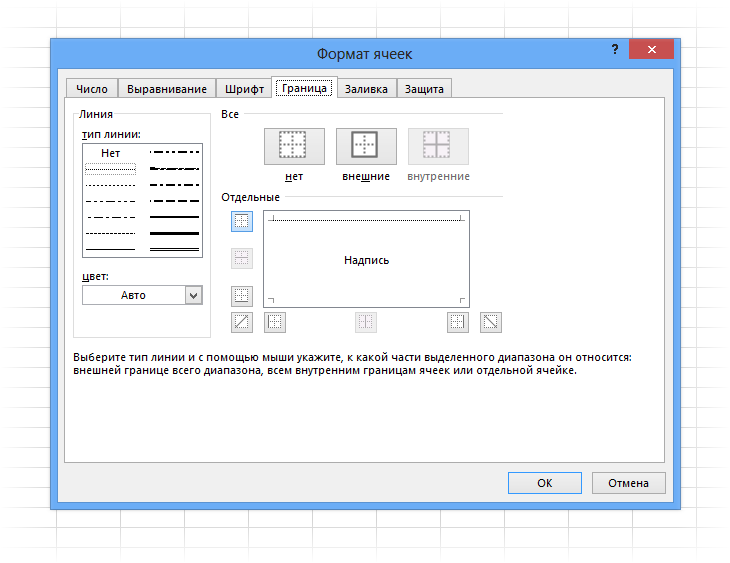Заливка ячейки производится в следующей вкладке. Здесь все еще понятней. Выбрали диапазон, залили, как нужно.
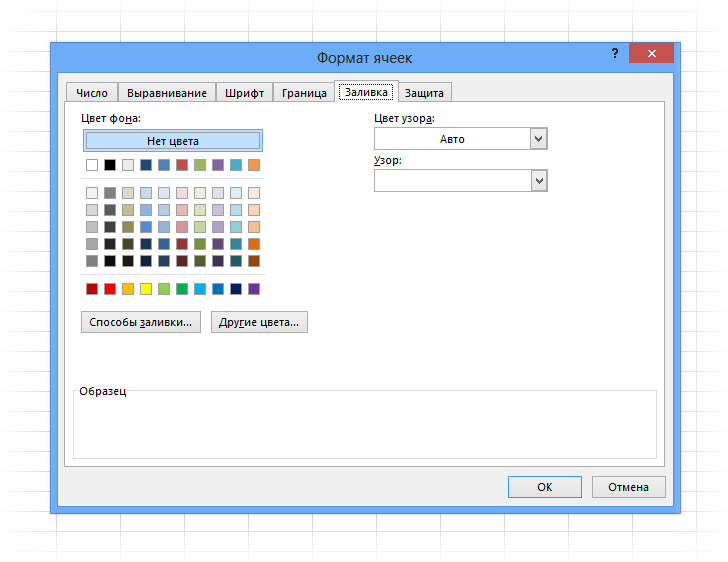Последняя вкладка Защита используется для ограничения доступа к ячейкам (можно сделать так, чтобы нельзя было вносить изменения и др.). В конце статьи есть видео с подробным объяснением, как сделать защиту листа Excel и отдельных ячеек.
Самые часто используемые команды есть на ленте.
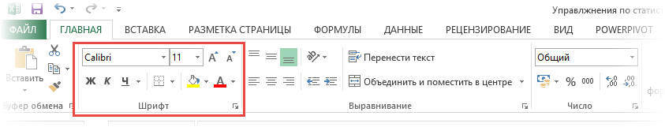Если назначение какой-либо кнопки не понятно, следует подвести курсор и прочитать всплывающую подсказку.
При использовании форматирования следует помнить о том, что слишком пестрая раскраска сбивает с толку и рассеивает внимание. Поэтому формат желательно использовать только для увеличения читабельности и привлечения внимания к наиболее важной информации. Увлекаться не стоит.
Если у вас проблемы с дизайнерским представлением или различные варианты формата не приводят к желаемому результату, то можно воспользоваться готовыми стилями. Выделяем нужный диапазон и нажимает кнопку Стили ячеек на вкладке Главная на ленте.
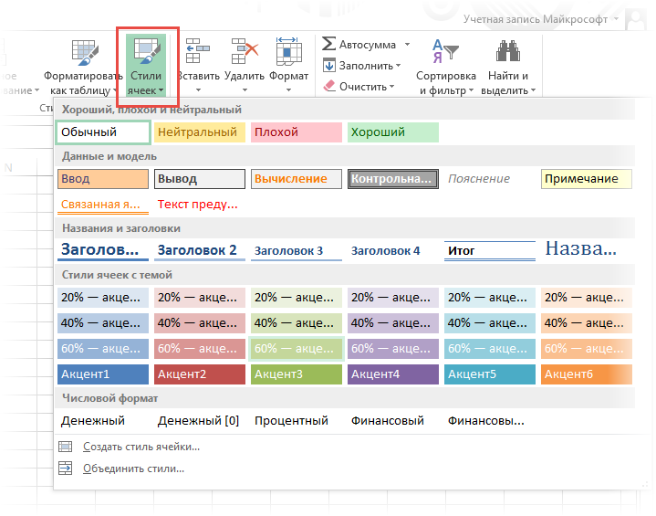Здесь можно выбрать готовое решение. Но я как-то не особо пользуюсь такой возможностью. Получается слишком пестро, хотя и довольно стильно, по-современному.
Пробуйте различные варианты. Смотрите, что нравится больше. Но лучше, повторюсь, не увлекаться. Думайте о тех, кто будет работать с вашими таблицами да и о себе тоже, когда придется открыть этот файл через несколько месяцев.